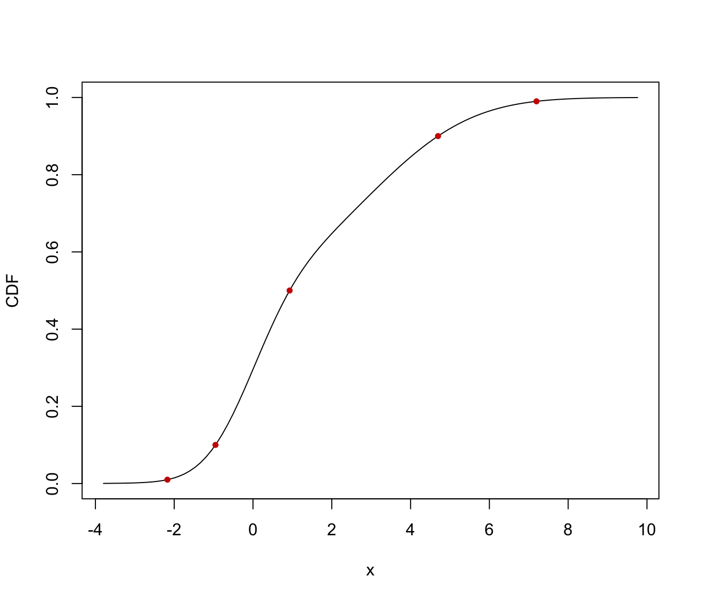
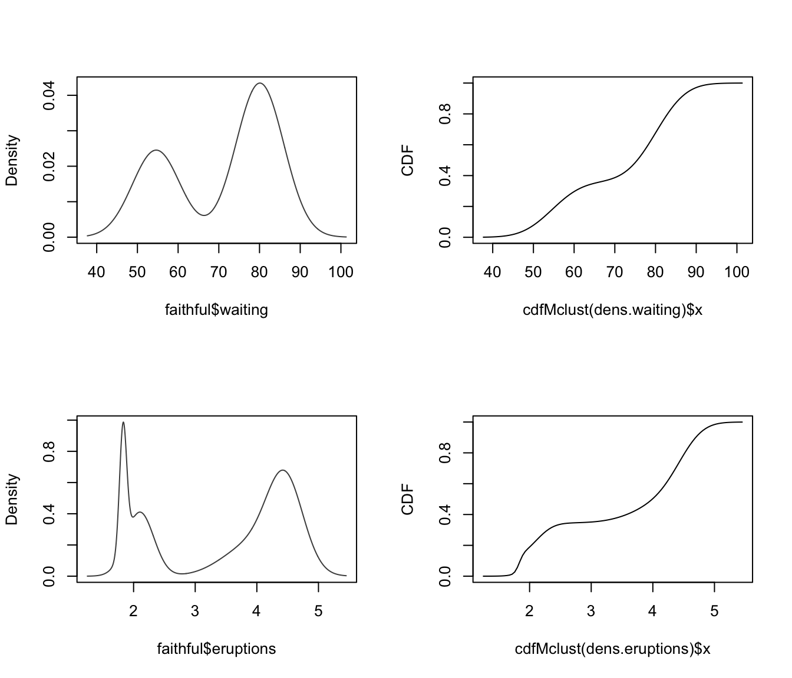

Cumulative Distribution and Quantiles for a univariate Gaussian mixture distribution
cdfMclust.RdCompute the cumulative density function (cdf) or quantiles from an estimated one-dimensional Gaussian mixture fitted using densityMclust.
Arguments
- object
a
densityMclustmodel object.- data
a numeric vector of evaluation points.
- ngrid
the number of points in a regular grid to be used as evaluation points if no
dataare provided.- p
a numeric vector of probabilities.
- ...
further arguments passed to or from other methods.
Details
The cdf is evaluated at points given by the optional argument data. If not provided, a regular grid of length ngrid for the evaluation points is used.
The quantiles are computed using bisection linear search algorithm.
Value
cdfMclust returns a list of x and y values providing, respectively, the evaluation points and the estimated cdf.
quantileMclust returns a vector of quantiles.
Examples
# \donttest{
x <- c(rnorm(100), rnorm(100, 3, 2))
dens <- densityMclust(x, plot = FALSE)
summary(dens, parameters = TRUE)
#> -------------------------------------------------------
#> Density estimation via Gaussian finite mixture modeling
#> -------------------------------------------------------
#>
#> Mclust V (univariate, unequal variance) model with 2 components:
#>
#> log-likelihood n df BIC ICL
#> -424.0276 200 5 -874.5469 -942.139
#>
#> Mixing probabilities:
#> 1 2
#> 0.4813092 0.5186908
#>
#> Means:
#> 1 2
#> -0.0617169 2.8923878
#>
#> Variances:
#> 1 2
#> 0.8938594 4.3252118
cdf <- cdfMclust(dens)
str(cdf)
#> List of 2
#> $ x: num [1:100] -3.8 -3.66 -3.52 -3.38 -3.25 ...
#> $ y: num [1:100] 0.000357 0.000458 0.000591 0.000766 0.001 ...
q <- quantileMclust(dens, p = c(0.01, 0.1, 0.5, 0.9, 0.99))
cbind(quantile = q, cdf = cdfMclust(dens, q)$y)
#> quantile cdf
#> [1,] -2.1730968 0.01
#> [2,] -0.9526056 0.10
#> [3,] 0.9295521 0.50
#> [4,] 4.6968529 0.90
#> [5,] 7.1950392 0.99
plot(cdf, type = "l", xlab = "x", ylab = "CDF")
points(q, cdfMclust(dens, q)$y, pch = 20, col = "red3")

par(mfrow = c(2,2))
dens.waiting <- densityMclust(faithful$waiting)
plot(cdfMclust(dens.waiting), type = "l",
xlab = dens.waiting$varname, ylab = "CDF")
dens.eruptions <- densityMclust(faithful$eruptions)
plot(cdfMclust(dens.eruptions), type = "l",
xlab = dens.eruptions$varname, ylab = "CDF")

par(mfrow = c(1,1))
# }